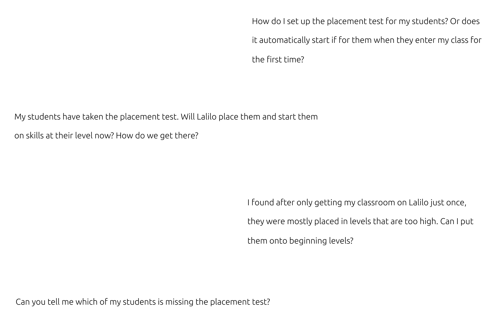
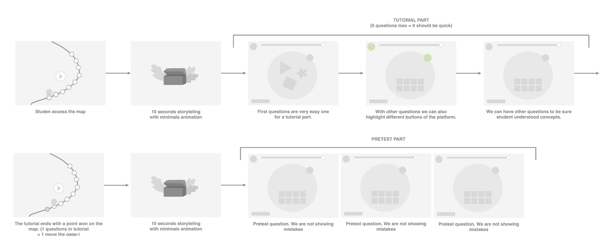

Overview
Lalilo is a reading platform for young students in elementary school. Every student starts with a placement test that sets their level. I redesigned it as two experiences running side by side: a playful start for students, and clear information for teachers about the test and its results.
Details
- Surface
- Web platform, student app and teacher dashboard
- Role
- UX & UI Designer, Illustrator
- Team
- Designer · Developers · Product Owner · Educational content team · Data scientists
- Scope
- Feedback analysis · User flow · UI design · Illustration & animation
Problem
Teachers left in the dark
More than 100 teachers wrote to us through the in-app chat. They didn't know how to start the test, who had taken it, or why their students were placed at a given level.
Solution
One test, two experiences
For students, a short tutorial and a test wrapped in storytelling and rewards. For teachers, the information they need about the test and where each student lands.
Result
A smoother first day on Lalilo
The new placement test reached 650K learners. Students got to their level faster, and teachers could follow the test instead of asking us about it.
Impact
650K
learners took the new placement test as their first step on Lalilo
100+
teacher messages analysed to understand what was going wrong
5
tutorial questions at most, so students reach the real test quickly
Context
The placement test is the very first thing a student does on Lalilo.
It decides where each student starts, so it shapes both their first impression of the platform and the teacher's trust in the results. The challenge was to serve two very different users at once: young children who should enjoy it, and teachers who need to understand it.
Goals
Provide a joined-up experience for students and teachers.
- Give students a first experience on the platform that doesn't look like a test.
- Give teachers all the information they need about the test and its results.
- Prioritize decisions according to their impact and the resources we had.
Key steps
Step 01
Listening to teachers.
The redesign started from the chat. Teachers from many different schools sent us more than 100 messages about the placement test: how to set it up, which students hadn't taken it, and why some were placed too high.

Step 02
Designing a flow that rewards students.
Students move along a map. A few seconds of storytelling open a short tutorial of five questions at most, which also introduces the buttons of the platform. Then come the test questions, where mistakes aren't shown, and each step earns a point on the map.

Design
The student experience
The test is punctuated with animations and storytelling, so a child's first steps on Lalilo feel like the start of an adventure rather than an exam. I also drew the illustrations.
What I learned
Design for two users at once.
Each student screen has a teacher counterpart. The test only works if the teacher understands what the student went through.
A serious moment can still be rewarding.
Storytelling and small rewards keep young students engaged in what is, underneath, an evaluation.
Weigh impact against resources.
Not everything could be built at once, so each product decision was prioritized by what it would change and what it would cost.
What I'd do next
Close the loop with teachers: show which students still need to take the test, explain each placement in plain words, and let teachers adjust a level when they know their student better than the test does.